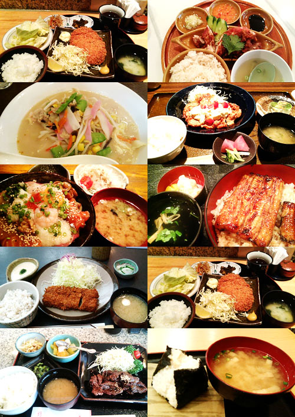
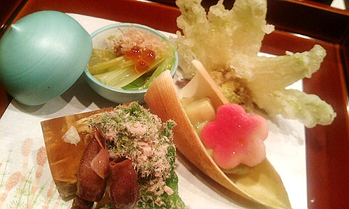

かに風味ブログ
-
たびってます
間があいちゃいましたー。 仕事に燃え尽き炭となって、よーやく動けるよーになったかなーとゆーわけで、旅に出ております。 今は、トランジットで台北桃園空港でチャーハン食べたり、ビール飲んだり。 このあと…

-
もりもり食べて
仕事してます。 久しぶりに2徹もー。やっぱりつらいのは初日だなー。 ファスティングと一緒だ。…て、そっちはしたことないけど。 でも、昔と比べてぽろぽろと記憶が落ちていく。 しっかりと覚えて置かなくて…

-
有楽町→新橋散歩
日比谷シャンテのよこっちょのゴジラを起点に…

-
テオ・ヤンセン展
よーやくテオ・ヤンセン展に行ってきましたー。 日比谷。 お正月に行ったときの閑散っぷりが信じられないくらい賑やかでしたー。マスコミ効果絶大。 小さな模型から ATARIのPC! ATARI、ア…

-
すっぽん
すっぽんたべさせて！ とゆーわけで、ごちそうになりましたわー。はーぷりぷり 春！な前菜。ホタルイカ豊漁みたいですねー。 山菜んまいなー。大人の味だなー。しみじみにがにが。 と！ら！ふ！ぐ！ ざ…

-
女子話
さいきん、会社の女の子とつるんでみたりしていております。 きゃあきゃあ根も歯もない噂話で盛り上がったり、 えらくビミョーな妄想をしたり 訳のわからないケーザイとか、ギジュツとかの話をしてみたりして…

-
CMでみた！
家庭用カセットボンベで動く耕耘機。 いいなー。欲しいなー。 今は戦時中。芋をつくるべし！と、こないだ飲み会で力説してしまった。 でも、じゃがいも、サツマイモ、大根、タマネギって簡単にできるし、保存…

-
告知？
茄子（上）（下） コミックスです。 どうして私は講談社が好きなんだろか？モーニング、アフタヌーン、イブニングとフルコースでハマっているマンガがあるな。 淡々とした日常、でもどこかそれに憧れを感じるよ…

-
こねこをみた
猫と犬って遊び方がぜんぜん違うから見ていて面白い。 子犬はずーっと毛布のひっぱりっこ 子猫はずーっと高いとこに座って、目の前を通る犬をちょいちょい かわいいなー

-
わけのわからないもの
時空スタッフ SFか？戦うのか？助けるのか？ 「よく喋る棒のような」と言われても「よく喋る棒」というものは私にはわかりませんがな。

-
わすれられた女子高生
若い娘はいいね！ …ってペンギンやん！ ちょうどこの頃の日記を読み返したら、マンスリーマンションの引っ越しで右往左往した有様が書いてあった。 同じ建物の二階と三階の引っ越しだったのだけど、同じ間取り…

-
せったい
きれいな色～♪薄萌葱色。 興奮して、同僚の男のコに「そこでねー…えーと、かやるど？がやうど？みた」と言ったら 「…ガヤルド…ランボルギーニですね」と。 男のコはすーぱーかーが好きですねー。 1,7…

-
読書感想文ひきつづき
チャイナフリー ぐるっと見渡すと、いつのまにか囲まれている「made in china」。 いかに消費社会と中国が密接なものなのか。 一年間、家族を道連れに「made in china」を家に入れな…

-
春のにおい。β版
トーキョーでおしごと。 夕方はらはらと雨。予報に無い大粒の雨だったのだけど、「あー春のにおいがするー」と、おもわず足を止めてしまった。いやいや足とめちゃいけないんだけど。 気がつけば、もう梅も咲き始め…
-
たまには教育
だらーっと教育テレビを見てた。 かなり本格的なブイヤベースの作り方とかやってるのねー。 なるほどアニス酒のかわりに、白ワインに八角を漬けたものでもいいんだなーと…結構本格的だなーとかなんだり、だらだら…

-
テオ・ヤンセン展
すっかり忘れておりました…行かなきゃ！ テオ・ヤンセン展 開催場所は、正月にクルクルクルミオ～♪のスケートリンクイベントを見た場所のよう。 リンク先の動画で見られる、浜辺で風を受ける作品の音がきも…

-
ぴっかー！
おしごとですよ！！ うっす！ 今回は（も？）ややこしい！なんらかのニンジンぶら下げて頑張ろう。なにがいいだろかー。 て、ゆーか！ 新橋キムラヤはいつからヤマダ電機になったのー？

-
アルパカ画像
さいきんアルパカブームなので、のせとこ。 たしかにヘンかも。 youtubeの画像ものせとこ

-
Re
忘年会に呼ばれて一泊二日の旅。 久しぶりに羽田に来たら、トイレにモニタがついていてびっくりした。 なんだ。そんなに長居してほしいのか。 トーキョー！ 忘年会会場近くのホテルに泊まる。 なんか見晴…

-
いまのわたくし冬の読書感想文
また関東に来てます。 今年も流浪の民。なんかだんだんこっちにいる期間が長くなってきていて、今回は2ヶ月予定。 まー相変わらず、米袋並の荷物担いで走り回っているだけですがー。 走って漕いで泳いでトライア…